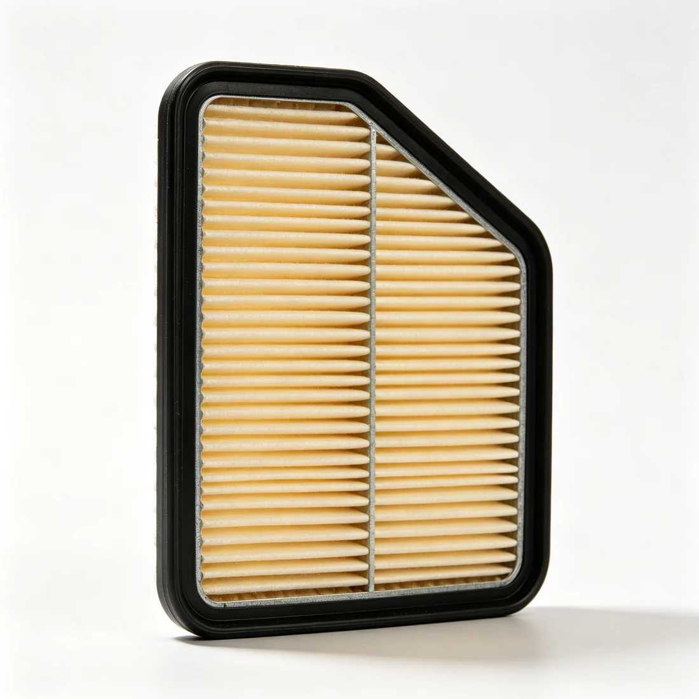
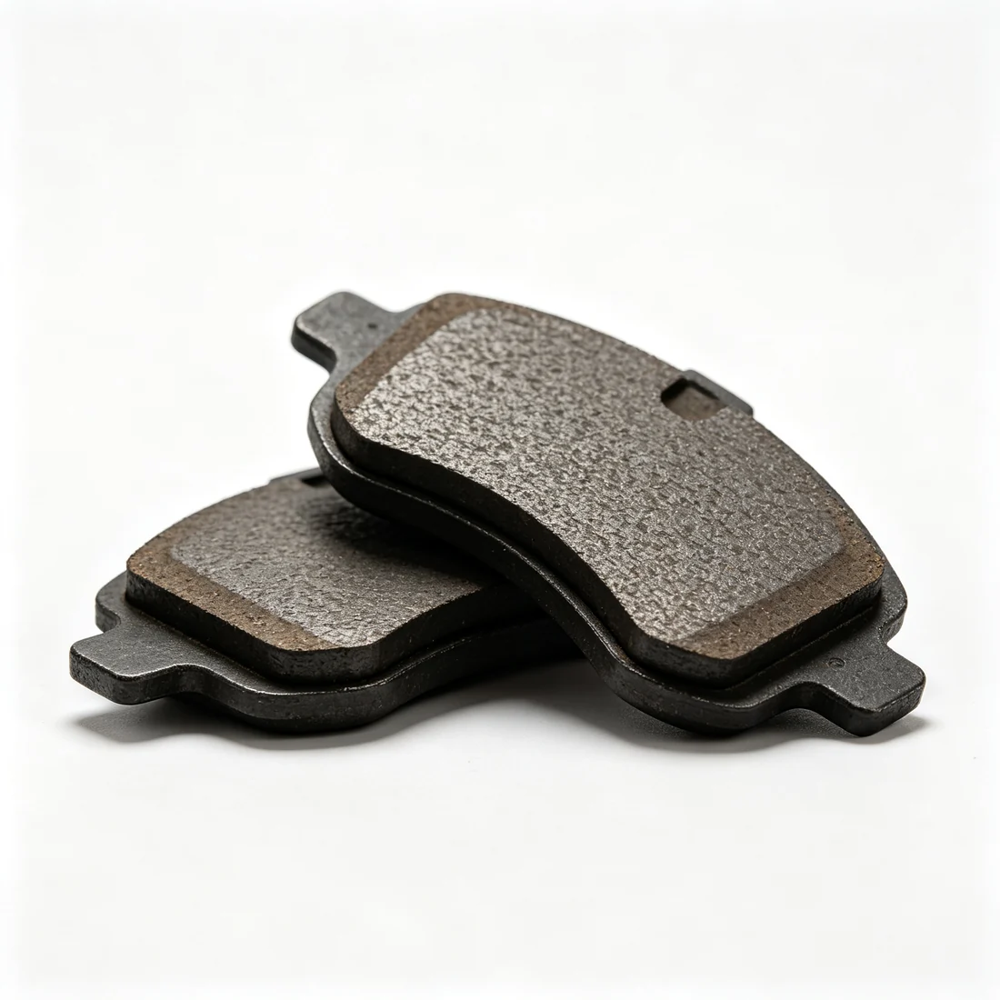
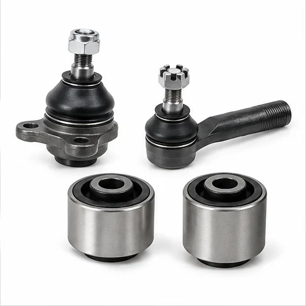
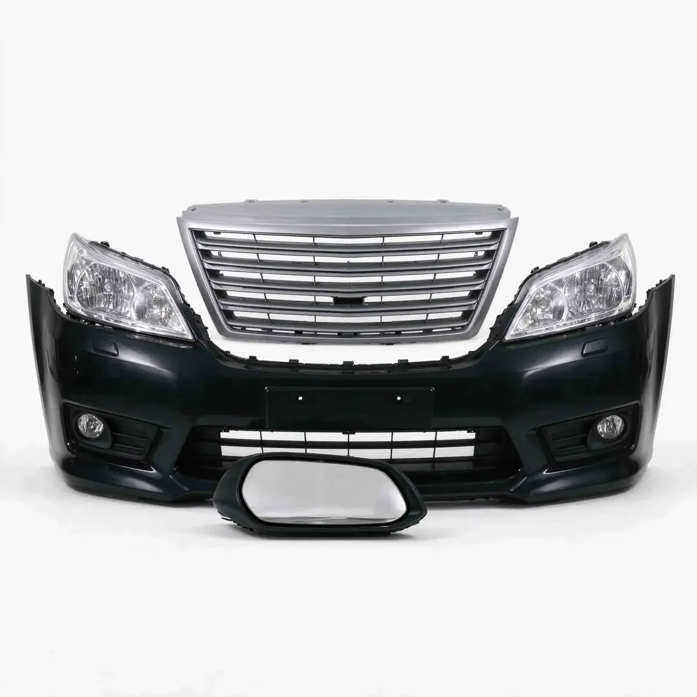

01. Комплект фильтров (воздушный / масляный / салонный)
Востребованная категория для регулярного обслуживания, удобная для комплектных заказов. Интервал замены уточняется по регламенту конкретного автомобиля.
Запросить цену на запчастиОтдельный раздел подбора для дистрибьюторов, СТО и импортёров. Отправьте OE-номер, артикул, VIN или точную применяемость. До письменного предложения проверяются совместимость, состояние, класс качества, упаковка и страна назначения. Это отдельное направление, не смешанное с экспортом автомобилей.
От расходных материалов для обслуживания до деталей ходовой части, тормозной системы и кузова. Подбор по автомобилю, OE-номеру, количеству и стране назначения.

Востребованная категория для регулярного обслуживания, удобная для комплектных заказов. Интервал замены уточняется по регламенту конкретного автомобиля.
Запросить цену на запчасти

Расходные детали тормозной системы. Подбор по спецификации и OE-номеру для Prado, Hilux, Corolla и других моделей.
Фото: колодки и тормозные накладкиЗапросить цену на запчасти
Лёгкие расходные товары для совместных заказов. Перед заказом уточняются длина, крепление и применяемость.
Запросить цену на запчасти

Распространённые лампы освещения и сигнализации. Необходимо проверить тип цоколя, мощность и электросистему автомобиля.
Фото: лампа фары и сигнальная лампаЗапросить цену на запчасти
Можно комплектовать с колодками. Подбор по модели, оси, диаметру диска и версии тормозной системы.
Запросить цену на запчасти
Амортизаторы, стойки стабилизатора, сайлентблоки и нижние рычаги. Подбор по коду шасси, нагрузке на ось и OE-номеру.
Запросить цену на запчасти
Бамперы, решётки, фары в сборе и зеркала. Перед заказом уточняются год, рестайлинг, сторона и отверстия под датчики.
Запросить цену на запчасти
Для коммерческих и внедорожных автомобилей. Требуется подтвердить характеристики, нагрузку и применяемость.
Запросить цену на запчасти
Компактная категория для комплектования с фильтрами. Подбор по коду двигателя, резьбе и калильному числу.
Запросить цену на запчастиИзображения носят иллюстративный характер. Бренд, номер детали, качество, применяемость и наличие подтверждаются в коммерческом предложении.
Надёжный оптовый заказ начинается с точной применяемости. Отправьте OE-номер, артикул поставщика, VIN, код двигателя, год автомобиля и, если важно, фото маркировки или разъёма.
Укажите новое, бывшее в употреблении или восстановленное состояние, нужный бренд или класс качества, гарантию, упаковку, количество по каждому SKU и страну назначения. До расчёта подтвердим, какие характеристики можно документально подтвердить.
Для деталей с разными габаритами, весом и требованиями к упаковке могут потребоваться отдельные коробки или паллеты. В заказе согласуйте маркировку, вес брутто, объём, способ загрузки и условия перевозки.
Подбор автомобилей, руководства по моделям и информация по Казахстану находятся в отдельном разделе экспорта автомобилей. Экспорт автомобилей →
Укажите OE-номер или артикул, применяемость, состояние, количество и направление поставки.